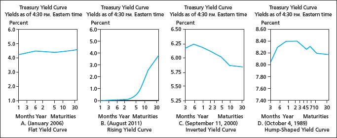
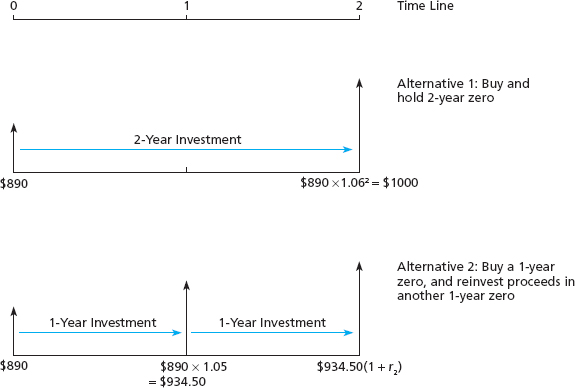
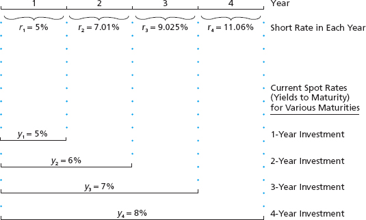
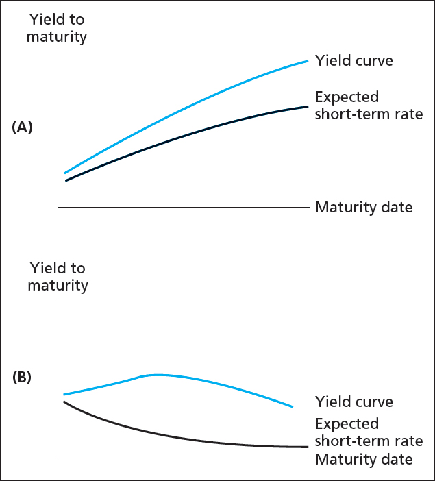
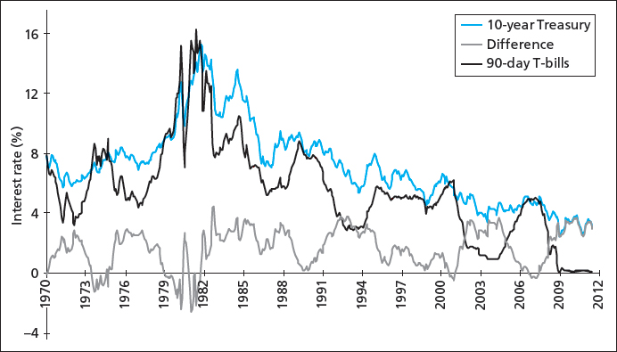

The Term Structure of Interest Rates
Yield Curve
Bonds of different maturities often have different yields to maturity.
- The relationship between yield and maturity is summarized
graphically in the yield curve.
- Consider several examples below.
\(\qquad\)

Yield Curve Slope
An upward sloping yield curve is evidence that short-term interest
rates are going to rise.
Yield Curve Slope
Suppose you begin with $890 to invest (the price of a two-year
zero-coupon bond with 6% YTM.
- Equating the returns to each strategy gives:
\[\begin{split}\$890 \times (1.06)^2 & = \$890 \times (1.05) \times (1+r_2)\end{split}\]
\[\begin{split}\Rightarrow 1 + r_2 & = \frac{1.06^2}{1.05} = 1.0701\end{split}\]
\[\begin{split}\Rightarrow r_2 & = 0.0701.\end{split}\]
Two Investment Strategies
\(\qquad\)

Spot Rates and Short Rates
We distinguish between two types of interest rates.
- Spot rate: the rate offered today on zero-coupon bonds of
different maturities.
- In the previous example, the one-year spot rate is 5% and the two
year spot rate is 6%.
- Short rate: the rate for given time interval (one year) offered at
different points in time.
- In the previous example, the first-year short rate is 5% (same as
the spot!) and the second-year short rate is 7.01%.
Spot Rates and Short Rates
The spot rate for a given period should be the geometric average of
short rates over that interval.
- Let \(y_2\) be the two-year spot rate.
- Let \(r_1\) and \(r_2\) be the first-year and second-year
short rates.
- Don’t forget that \(y_1 = r_1\).
\[\begin{split}(1+y_2)^2 & = (1+r_1)\times(1+r_2)\end{split}\]
\[\begin{split}\Rightarrow 1+y_2 & = \sqrt{(1+r_1) \times (1+r_2)}.\end{split}\]
Spot Rates and Short Rates
So, if the yield curve slopes up (\(y_2 > y_1 = r_1\)), we
conclude that short-term rates will rise (\(r_2 > r_1\)).
- Reverse reasoning holds for a downward sloping yield curve.
Spot Rate and Short Rate Example
Assume the following spot rates and short rates:
- Spots: \(y_1 = 0.05\), \(y_2 = 0.06\) and \(y_3 =
0.07\).
- Shorts: \(r_1 = y_1\) and \(r_2 = 0.0701\).
- What is the three-year short rate, \(r_3\)?
Spot Rate and Short Rate Example
Buying a three-year zero-coupon bond should be identical to buying a
two-year zero and rolling into a one-year zero.
\[\begin{split}(1+y_3)^3 & = (1+y_2)^2 \times (1+r_3)\end{split}\]
\[\begin{split}\Rightarrow 1.07^3 & = 1.06^2 \times (1+r_3)\end{split}\]
\[\begin{split}\Rightarrow r_3 & = \frac{1.07^3}{1.06^2} - 1 = 0.09025.\end{split}\]
Spot Rate and Short Rate Example
We know
\[\begin{split}(1+y_2)^2 & = (1+r_1) \times (1+r_2).\end{split}\]
So the full decomposition is
\[\begin{split}(1+y_3)^3 & = (1+y_2)^2 \times (1+r_3)\end{split}\]
\[\begin{split}& = (1+r_1) \times (1+r_2) \times (1+r_3)\end{split}\]
\[\begin{split}\Rightarrow 1.07^3 & = 1.05 \times 1.0701 \times 1.09025.\end{split}\]
Spot Rate and Short Rate Example
\(\qquad\)

General Short Rates
We can generalize the previous results.
- Investing in an \(n\) period zero-coupon bond should be the same
as investing in an \(n-1\) zero and rolling into a one-period
zero at time \(n-1\).
\[\begin{split}(1+y_n)^n & = (1+y_{n-1})^{n-1} \times (1+r_n)\end{split}\]
\[\begin{split}\Rightarrow 1+r_n & = \frac{(1+y_n)^n}{(1+y_{n-1})^{n-1}}.\end{split}\]
Forward Rates
In the development above, we assumed no uncertainty.
- All future rates were known at time zero.
- In reality, we don’t have perfect knowledge of time \(n\) short
rates at time zero.
Forward Rates
To distinguish between actual short rates that occur in the future, we
define the forward rate to be
\[\begin{split}\Rightarrow 1+f_n & = \frac{(1+y_n)^n}{(1+y_{n-1})^{n-1}}.\end{split}\]
- The time \(t=n\) forward rate is the break-even interest rate
that equates the returns of an n-period zero-coupon bond with an
\((n-1)\) -period zero rolled into a one-period zero.
- It may not be equal to the expected future short rate.
Expectations Hypothesis
The Expectations Hypothesis of the yield curve says that expected
short rates equal forward rates:
\[\begin{split}E[r_n] & = f_n\end{split}\]
\[\begin{split}\Rightarrow (1+y_n)^n & = (1+y_{n-1})^{n-1}(1+E[r_n]).\end{split}\]
- If the yield curve slopes upward, short rates are expected to rise:
\(E[r_n] > E[r_{n-1}] > r_1 = y_1\).
- If the yield curve slopes downward, short rates are expected to
fall: \(E[r_n] < E[r_{n-1}] < r_1 = y_1\).
Liquidity Preference Theory
According to the Liquidity Preference Theory of the yield curve,
investors must be compensated for holding longer-term bonds.
- Longer-term bonds are subject to greater risk, and so investors
should demand a premium for holding them.
- In reality, a premium means that investors will only buy them for
a lower price (which means greater yield).
Liquidity Preference Theory
The Liquidity Preference Theory can be expressed as forward rates
being equal to expected short rates plus a premium, \(\phi\):
\[\begin{split}f_n & = E[r_n] + \phi\end{split}\]
\[\begin{split}\Rightarrow (1+y_n)^n & = (1+y_{n-1})^{n-1}(1+E[r_n] + \phi).\end{split}\]
- According to this theory, expected short rates can be constant if
the yield curve is upward sloping.
- If the yield curve is downward sloping, expected short rates must be
falling. Why?
Liquidity Preference Example
Suppose you buy a two-year bond and that
- Short rates for the next two years are constant at 8%: \(r_1 =
E[r_2] = 0.08\).
- The liquidity premium for year two is 1%: \(\phi = 0.01\).
Liquidity Preference Example
What is the yield to maturity of the two year bond?
\[\begin{split}(1+y_2)^2 & = (1+r_1)(1+f_2) \hspace{1.25in}\end{split}\]
\[\begin{split}& = (1+r_1)(1+E[r_2]+\phi)\end{split}\]
\[\begin{split}& = (1.08)(1.09) \hspace{0.8in}\end{split}\]
\[\begin{split}\Rightarrow 1+y_2 & = \sqrt{1.08 \times 1.09} \hspace{1.4in}\end{split}\]
\[\begin{split}& = 1.085. \hspace{1.2in}\end{split}\]
- So the yield curve slopes up (\(y_2 > y_1\)) even though
expected short rates are constant.
Expectations Hypothesis Example
However, if there is no liquidity premium
\[\begin{split}(1+y_2)^2 & = (1+r_1)(1+f_2) \hspace{0.95in}\end{split}\]
\[\begin{split}& = (1+r_1)(1+E[r_2]) \hspace{0.02in}\end{split}\]
\[\begin{split}& = (1.08)(1.08) \hspace{0.5in}\end{split}\]
\[\begin{split}\Rightarrow 1+y_2 & = \sqrt{1.08 \times 1.08} \hspace{1.1in}\end{split}\]
\[\begin{split}& = 1.08. \hspace{1in}\end{split}\]
- Now the yield curve is flat.
Implications of the Theories
The slope of the yield curve always determines whether forward
rates are rising or falling.
- \(y_2 > y_1\) means \(f_2 > f_1\) (by the definition of
forward rates!).
- If the Expectations Hypothesis holds, \(E[r_2] = f_2\), so
\(y_2 > y_1\) means \(E[r_2] > r_1 = f_1 = y_1\).
Implications of the Theories
Exp. Hypothesis vs. Liquidity Pref Theory
\(\qquad\)

Historical Term Spread
\(\qquad\)

{kind=link}
{kind=link}
{kind=link}
{kind=link}
{kind=link}